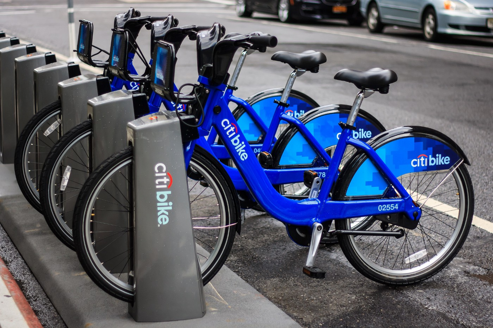

Visualization Charts for the NYC Bike Sharing System
What are the uses of visualization techniques?
Image result for uses of visualization charts
Data visualization is a graphical representation of information and data.
By using visual elements like charts, graphs, and maps, data visualization tools provide an accessible way to see and understand
* trends
* outliers
* patterns in data.
Dashboards are built to provide quick insights into some of the most important business processes.
Dashboards work best if the information they contain is to the point and instantly visible.
The dashboard-building process begins with determining its purpose and key performance indicators involved.
